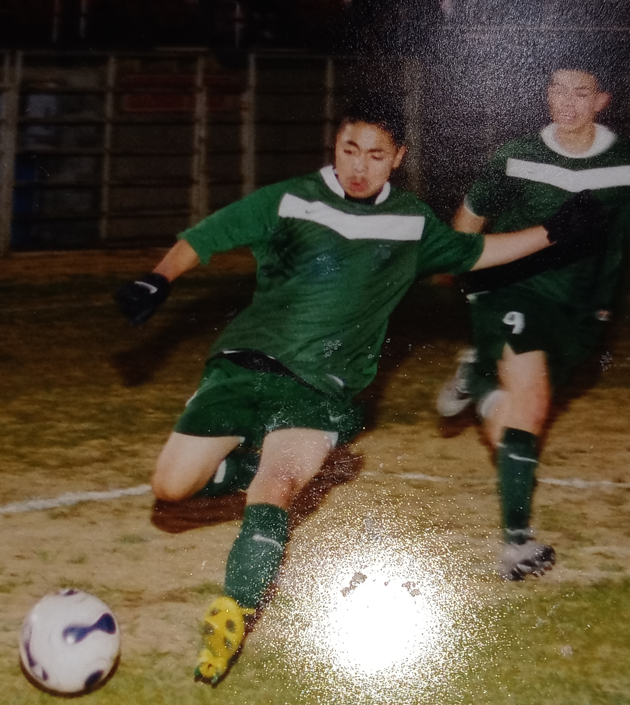
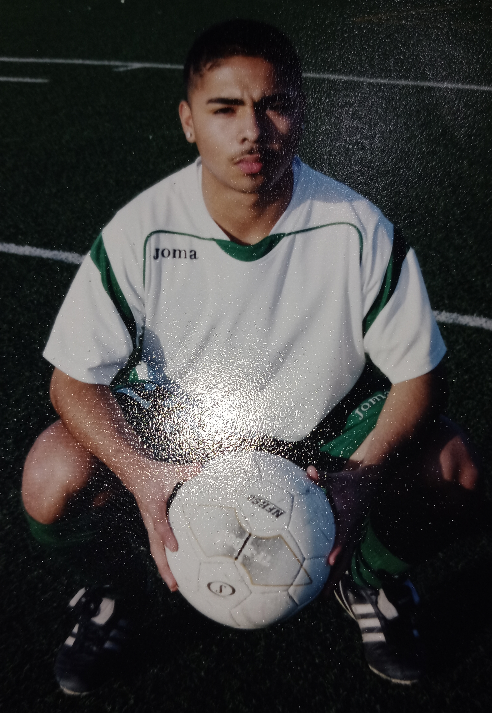
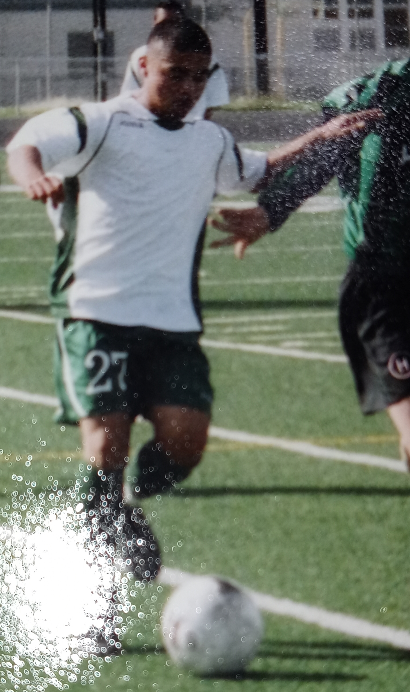
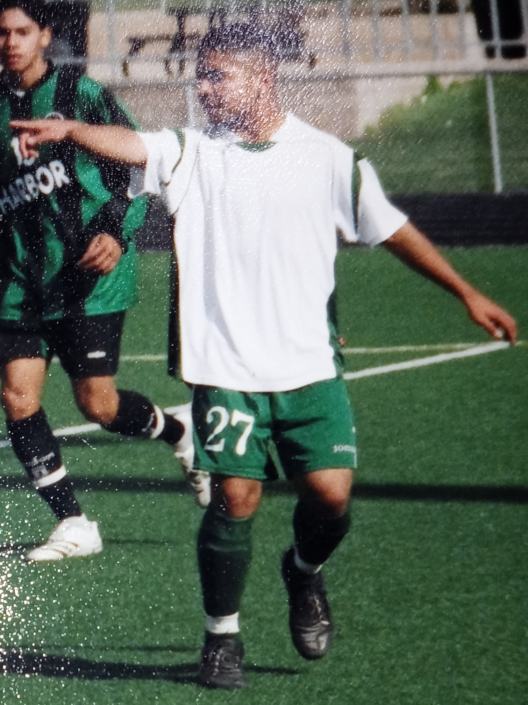
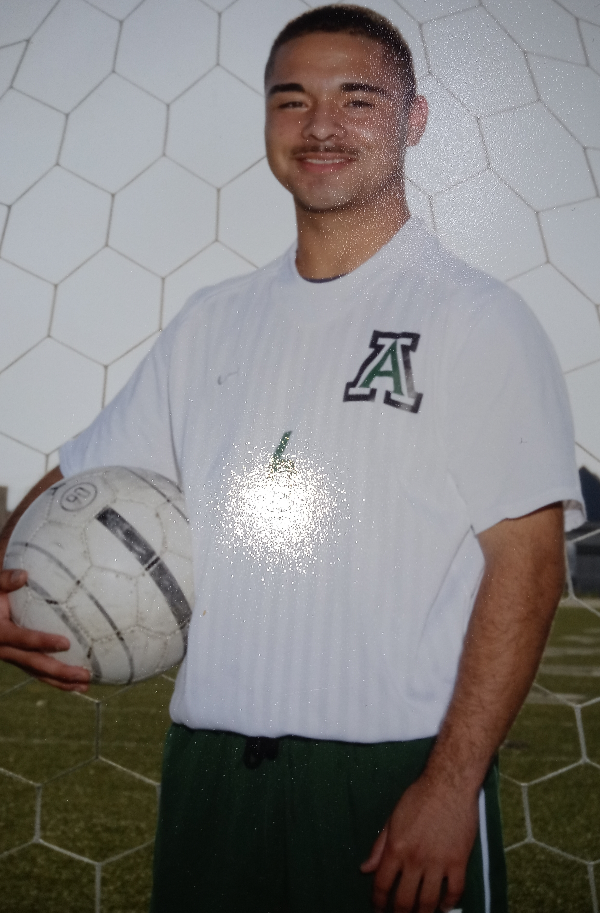
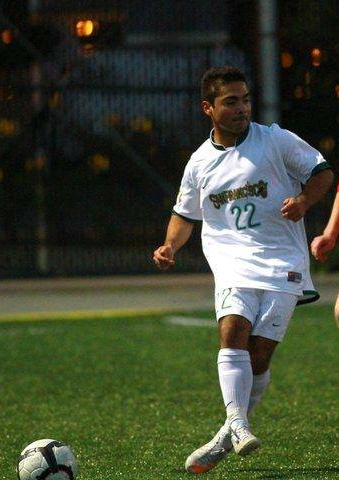

My Life As A Soccer Player
I'm Gerardo Tapia Vera, and I'm born and raised on the soccer fields of Salinas, California. I first began playing soccer at home in my living room by kicking the ball
when I was 5 years old before I got the call from my older brother's former soccer coach asking if I wanted to join his soccer team for my age, and I said yes. I believe
my first practice was that very same afternoon at North Salinas High School, and I remember getting in a circle to start off by stretching. The name of the team was
Deportivo Salinas, and we played our first games at the Washington Middle School soccer league. I learned how to play all the positions during my first two years, but I
was born to be an offensive play maker. I became captain of my club team during my first season playing, and I commanded the team throughout all of my youth, teenage, and
adult soccer career. I was best playing as a center midfielder where I learned to control the direction and speed of the ball throughout my career with Deportivo Salinas.
We played at the Gavilan Youth Soccer league where we won various championships, and we played in the NorCal Premiere League where we won 1 Silver championship. I
travelled throughout Northern California when playing for the NorCal league, and we also travelled to Sonoma every summer to play in the 6 versus 6 tournament at Sonoma State
University. I developed a passion to play and live in the hot weather. I played for El Sausal Middle School in East Salinas, I played for Alisal High School in East Salinas,
and I played for the University of San Francisco in the heart of San Francisco. I'm a high school graduate from Alisal High School and a university graduate from the
University of San Francisco. I earned my high school diploma in June 2010, and I earned my Bachelor's of Arts degree in Kinesiology and minor in Health Studies on December
2014. I played varsity soccer all 4 years at
Alisal, and I became a starter my sophemore year as the right midfielder. I became captain my Junior year. We won the league all 4 years I was there including a CCS
championship my senior year, a 1-0 win versus our biggest playoffs rival Watsonville High School at Gilroy High School's stadium. I played some time for the varsity team at
the University of San Francisco, but I never became a starter on the team. Fortunately, I also played club soccer and intramural soccer where I was a starter as a center
midfilder. I earned a 3.7 G.P.A. in high school, and my favorite subject was Math. The highest Math class I took in High School was Algebra 2, and I got an A in the class.
I earned a 2.8 G.P.A. at the University of San Francisco, and my favorite course was Human Physiology. I accumilated an A grade in my Human Physiology class as well. As you
can see, I have a passion for soccer and education, but I've also made some not so smart moves in the working world. I've worked various jobs, but I now solely dedicate my
time to learning programming languages and reading non-fiction books. I've redesigned my website various times, but I've yet to be satisfied with any of them due to the
fact that I don't know back end coding. My favorite non-fiction book so far is Cyberspies. I say I work as a Freelance Front End Web Designer and Python programmer, but I've
yet to do any coding
for a client. Online, I see that companies are looking to hire junior programmers and are willing to train the individual, and I've applied to those jobs. However, I haven't
been hired by any of them. I don't get contacted, because they're false job postings. Therefore, I have to be dogmatic, disciplined, and hopeful that my company will
flourish. I expect this website and what I do to make an impact on the people that see it. I do desire that my company makes an impact all over the world by allowing children
to understand that sports and school are very important responsibilities in life that lead to the wellbeing and success of any individual. Please feel free to contact me at
my cellphone number +18313561442 or my email gerardov66@gmail.com, thank you.
1 / 8

First year playing with Deportivo Salinas. The photo was taken at Washington Middle School before a soccer game.
2 / 8

Freshmen year with Alisal High School versus Palma High School at the Salinas Rodeo Soccer Field. I went in there as a sub and was about to cross the ball here.
3 / 8

Sophemore year individual photo at Alisal High School's stadium before practice.
4 / 8

Sophemore year dribble versus Harbor High School at Alisal High School's stadium. This was our first game of the preseason and my last game as a subtitute player.
5 / 8

Commanding the next pass in the second half versus Harbor High School at Alisal High School's stadium.
6 / 8

Junior year game winning goal celebration in the quarter final CCS playoffs at Alisal High School's stadium.
7 / 8

Senior year photo at Alisal High School's stadium before practice.
8 / 8

Passing the ball at U.S.F.'s Negoesco Stadium on a friendly game before fall preseason my Freshmen year.